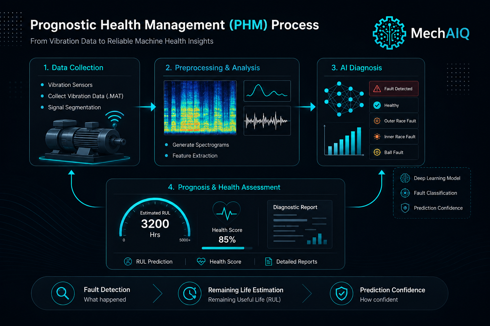

AI-powered Diagnostics and Prognostics for Industrial Machinery
MechAIQ builds intelligent machine health monitoring systems that combine vibration sensing, AI-driven diagnostics, and prognostics to predict failures before breakdown occurs — helping industries significantly reduce downtime, maintenance costs, and operational losses.
Our Vision
We are building the next generation of industrial intelligence systems that transform raw machine performance data into actionable diagnostics, prognostics, and maintenance decisions.
Real-Time Monitoring
Continuous machine vibration data acquisition and live operational health tracking.
AI Diagnostics
Automatic detection of bearing faults, imbalance, misalignment, looseness, and gear anomalies with definite confidence levels.
Predictive Prognostics
Remaining useful life estimation and failure forecasting for rotating equipment.
Cloud Dashboard
Remote machine monitoring with secure analytics dashboards and health reports.
Custom Sensor Integration
Plug-and-play deployment with vibration, acoustic, and process sensors.
Industrial Intelligence
Data-driven maintenance planning to reduce downtime and optimize asset life.
How it works
- Sensor installation on target machinery
- Live data collection and edge processing
- AI-based fault diagnosis engine
- Remaining useful life prediction
- Actionable maintenance recommendations
PHM Workflow
Our predictive health monitoring workflow combines sensor data acquisition, AI-based diagnostics, and prognostics to generate actionable maintenance intelligence.

Use Cases
Rotating Equipment
Motors, pumps, compressors, driveshafts, engine cranks, gears, bearings.
Condition Monitoring
Continuous asset health analytics for industrial plants.
Failure Prevention
Early warning system to avoid catastrophic breakdowns.
Contact
Schedule a product walkthrough or discuss a pilot deployment.
Email: hello_mechaiq@outlook.com
Request Demo